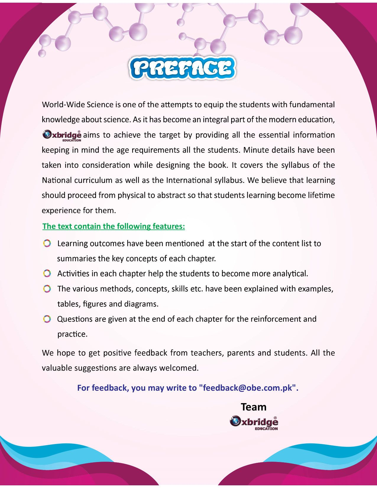

OXBRIDGE MM SERIES
World-Wide Science — Grade 3
The complete book, free to read online — page by page.

79 Pages
11 Units
68 Topics
📖 Read the Book — Free
Units in This Book
UNIT 1
Plant's World
5 topics
UNIT 2
Flowers, Seeds And Fruits
8 topics
UNIT 3
Classifying Animals
8 topics
UNIT 6
Materials And Investigating Materials
8 topics
UNIT 7
Electric Circuits
6 topics
UNIT 9
Air And Wind
5 topics